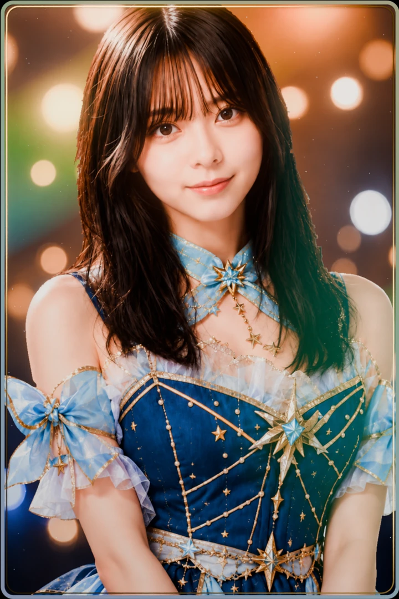
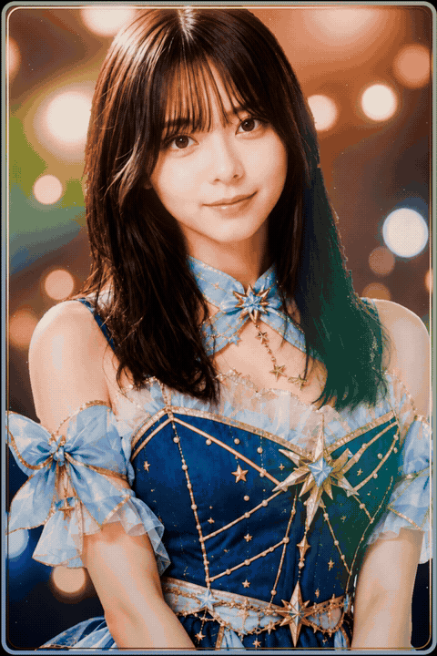

STARLIGHT PORTRAIT
SHE WORE THE STARS
星を縫いつけた人
紺と金の星をまとった一枚。人物と背景を別のレイヤーに分けてあるので、カードが振れるたびに背景のボケだけが遅れて流れ、輪郭を金の光がなぞります。
Stitched in starlight, lit from within.
右にあるのは GIF ファイルそのものです。3Dエンジンも JavaScript も使っていません。保存して Slack にでも Discord にでも放り込めば、同じように光り続けます。


GIF ／ 60 FRAMES ／ LOOP
Card Data
- Collection
- STARLIGHT PORTRAIT COLLECTION
- Edition
- 001 / 001
- Technique
- PRISM SILVER FOIL
- Rarity
- HOLOGRAPHIC
- Format
- GIF ／ 480 × 720 px ／ 2:3
- Motion
- 60 フレーム ／ 20fps ／ 3秒ループ
- File
- 6.3 MB ／ 単体で完結
- Year
- 2026
Making
元になっているのは4枚のレイヤーです。人物をアルファ付きで抜き、その裏に人物のいない背景を描き起こし、輪郭だけを拾った線画を重ねています。それを Blender 4.5（Cycles）に持ち込み、人物を手前・背景を奥に離して置き、カードを左右 ±8° だけ往復させながら 20fps × 3秒、64サンプルで焼きました。
焼いてしまえば、あとは GIF です。再生に何も要りません。計算していたはずの視差も虹彩も、60枚のフレームの中に固定されています。書き出した瞬間に、この一枚はこのサイトから独立します。
代わりに手放したものもあります。角度は選べず、往復の幅は決め打ちで、色は96色のパレットに落ちています。絵に見える細かなざらつきは、その量子化のディザです。